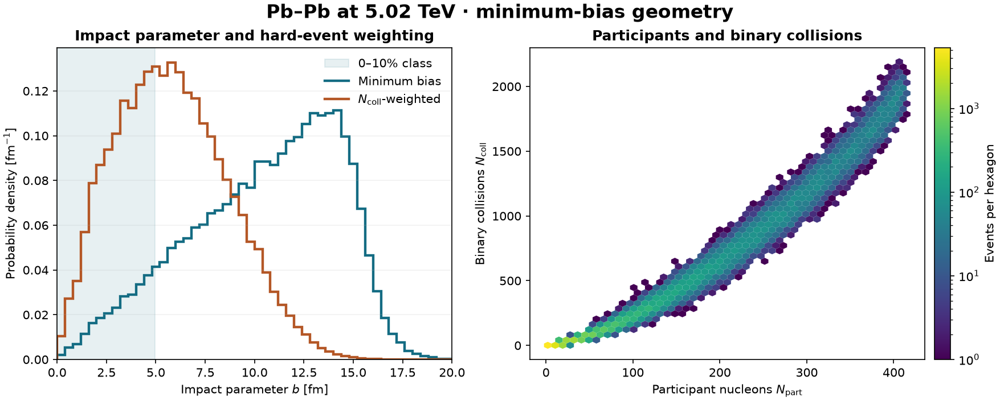
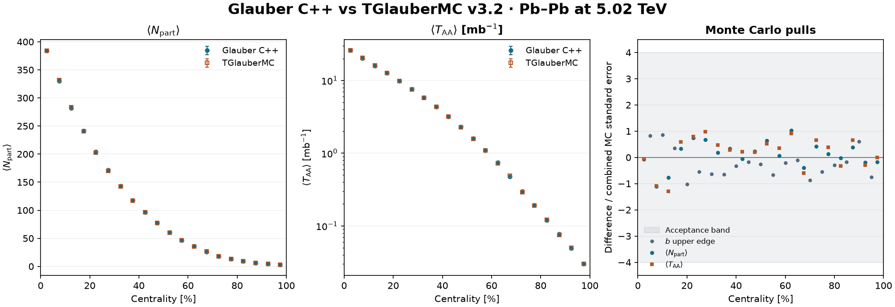

Install and generate a Pb–Pb sample
In an activated Python environment, install the CLI from PyPI. Wheels are available for macOS arm64, macOS Intel, and Linux x86_64.
pip install 'hepyy[glauber-cpp]'
glauber-pbpb pbpb-5020 6000 72913The command uses 6,000 proposals and seed 72913. It writes
pbpb-5020/events.csv, centrality.csv,
and metadata.json under the new output directory.
The defaults are 67.6 mb at 5.02 TeV and 5% centrality bins.
Download the validated event CSV, centrality CSV, or metadata.
CMake fallback
Build from the repository checkout with CMake and a C++17 compiler. The generator uses the C++ standard library. ROOT is used for the independent TGlauberMC comparison.
cmake -S . -B build -DCMAKE_BUILD_TYPE=Release
cmake --build build
build/glauber-pbpb pbpb-5020 6000 72913Pb–Pb geometry at the LHC
The generator uses the Pbpnrw proton and neutron profiles with continuous nucleon placement. It proposes impact parameters uniformly in transverse area and retains collisions with at least one inelastic nucleon pair. Ranking the accepted collisions by impact parameter defines the centrality classes used here.
- Collision energy
- 5.02 TeV
- Inelastic events
- 36,598
- Inelastic NN cross section
- 67.6 mb

In the 0–10% class, the mean impact parameter is 3.308 fm in the minimum-bias rows and 3.140 fm after binary-collision weighting. The minimum-bias class mean nuclear overlap is ⟨TAA⟩ = 23.147 ± 0.057 mb−1, using the fixed-bin Monte Carlo standard error.
Comparison with TGlauberMC
Each implementation drew 60,000 proposals using independent seeds and the same collision settings. Glauber C++ accepted 36,598 inelastic events and TGlauberMC v3.2 accepted 36,533. The tests rerank each sample independently and recalculate the centrality boundaries in jackknife replicates.

The total inelastic Pb–Pb cross sections were 7.665 ± 0.025 b (C++) and 7.651 ± 0.025 b (TGlauberMC). Full validation results · Figure script
Use the geometry in Python and JEWEL
Read the CSV tables directly in Python, or launch the
standalone executable with subprocess.run to generate a new
sample. The JEWEL C++ runner consumes the same event table through
--centrality 0 10 --glauber-events path/to/events.csv.
It samples the hard-event impact parameter in proportion to
Ncoll. For inclusive jet yield normalization, JEWEL
uses the separate minimum-bias class mean
⟨TAA⟩.
Glauber event generation is currently exposed through
the glauber-pbpb executable. The jewel_cpp
Python interface generates hadronized JEWEL events at a configured
impact parameter.
JEWEL geometry notebook and plots · Glauber-weighted jet RAA